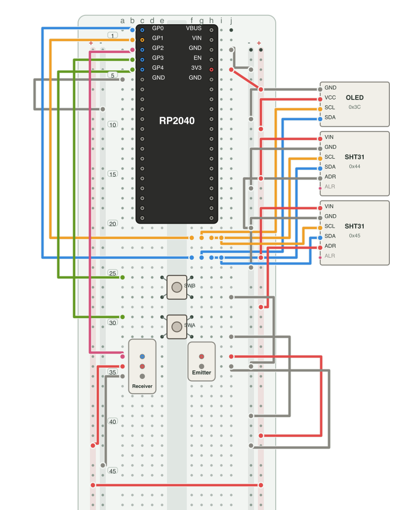

The Breadkit diagram generator
Turn wiring into a clear diagram.
Generate a breadboard diagram from components and wires written in Ruby. Switch layers in SVG, or save the result as PNG or JPEG.
{kind=link}
Install and render
gem install breadkit-render
bkrender circuit.bk.rb -o circuit.svg
bkrender circuit.bk.rb -o circuit.png --scale 2
One circuit, several formats
SVG
Stays sharp when enlarged. Circuits with layer: can switch between views.
PNG
Useful for READMEs and sharing. Set the resolution with --scale.
JPEG
Save a raster image with a chosen background color and quality.
Choose how to show the circuit
Set orientation, theme, power rail pattern, and net labels from the CLI. Component and pin positions come from the circuit file.
bkrender circuit.bk.rb -o circuit.svg \
--orientation portrait \
--theme dark \
--rail-pattern '+--+'Rail patterns: +--+, +-+-, -+-+, or -++-.
Review findings on the diagram
Overlay bklint JSON output to see flagged holes and wires on the diagram.
bklint circuit.bk.rb --format json --out lint.json
bkrender circuit.bk.rb --annotations lint.json \
-o review.svgThe 5 V emitter layer is an alternative connection. Remove the emitter's 3.3 V wire before using it. Keep the receiver at 3.3 V.
Learn to write a circuit